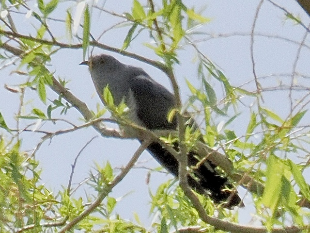

Common Cuckoo
Cuculus canorus
Order: Cuculiformes
Family: Cuculidae

The cuckoo of the cuckoo clock. A grey bird with long wings and tail, flying like a small bird of prey. Sometimes there is a rufous (or hepatic) morph with reddish plumage. A brood parasite that lays eggs in the nests of other birds such as reed warblers and meadow pipits. If you hear the Cuc-KOO call, scan the tops of trees nearby and look for a dark lumpy shape. I made the rookie mistake of taking this piece of advice too literally and just looked at the very top of trees; please also do note that they can be found in more leaved areas, or lower exposed perches.